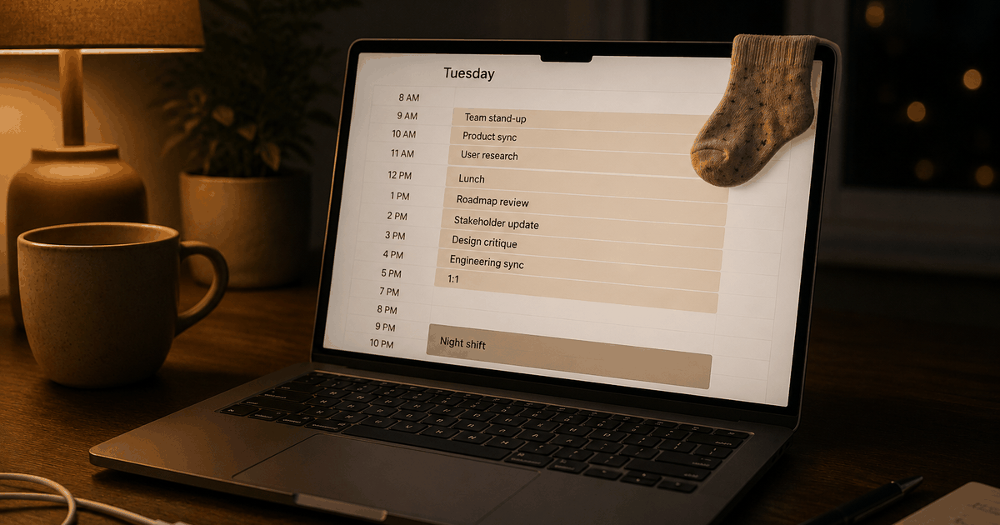

 ES
ESA note from Elizaveta — We built Regular for the couple, not the calendar. So this isn't a productivity piece — it's about protecting your wellbeing and your relationship when work and a newborn both want all of you. Why trust us.
There's no clean work-life balance with a newborn — the honest goal is protecting a few non-negotiables while everything else wobbles. What the research is clear on: the structural stuff (leave, hours, financial strain) shapes your mental health far more than willpower does. In a 2026 study of 4,290 new fathers, those who took unpaid leave were 58% more likely to report anxiety than fathers with paid leave (Garfield et al., American Journal of Public Health). The moves that help are the ones that cut work-family conflict — not the ones that cram more into the day.
It's 11 p.m. Laptop open on one knee, baby monitor glowing on the other. You're answering a work message with one hand and rocking a bouncer with your foot.
You're technically in both worlds at once — and fully present in neither. That's the feeling most "balance" advice completely misses.
So let's be honest about what this season actually is, what the research says protects you, and where to put your limited energy.
"Balance" is the wrong word for the newborn months
In the newborn phase there is no balance point — work and a newborn both demand everything, so something gives no matter what. The realistic goal isn't equilibrium; it's boundaries: choosing a few things to protect fully and letting the rest flex. Chasing "balance" mostly generates guilt, because it measures you against a state that doesn't exist right now.
Think of it less like a scale and more like triage. You can't keep every plate spinning, so you decide — on purpose — which two or three you refuse to drop, and you let the others rattle.
That reframe matters because the alternative, "try harder to do it all," is exactly the mindset that runs straight into dad burnout.
What the research actually says protects you
The strongest evidence points at structure, not grit: paid, real leave and lower financial strain protect new fathers' mental health, while work-family conflict damages it. Fathers on unpaid leave were markedly more anxious than those with paid leave, and even where family-friendly policies exist, dads' actual work patterns barely shift — so the conflict persists.
In the 2026 Ohio Fatherhood study of 4,290 new dads, 11% had anxiety and about 6.6% had depression — and the single structural factor that stood out was leave: unpaid-leave fathers were 58% more likely to report anxiety. Money and time off aren't "nice to have"; they're mental-health infrastructure.
higher odds of anxiety among new fathers who took unpaid leave versus those with paid leave — in a 2026 study of 4,290 dads. Paid, real time off is one of the most protective moves available.
And the pressure isn't imaginary. A 2026 qualitative study of fathers found that even with family-friendly policies on paper, men's work patterns stayed remarkably rigid and work-family conflict remained the norm — dads are judged against a full breadwinner standard and a full hands-on-parent standard at the same time.
Despite fathers' increased involvement and family-friendly policies, fathers' employment patterns have been resistant to change, and work-family conflict remains prevalent.After a 2026 qualitative study of fathers' work-family balance, Journal of Family and Economic Issues
What doesn't work
The losing moves are hustling straight through with no leave, being physically home but on your phone the whole time, sacrificing your own sleep and health to "cover everything," and treating the strain as a personal-discipline problem. The last one is the trap: this is structural, so willpower alone can't fix it — and blaming yourself just adds shame to exhaustion.
"Present but on the phone" deserves special mention. Being in the room while mentally at work gives you the cost of both worlds and the benefit of neither — and your partner feels the absence even when your body's there.
None of this is a character flaw. It's what happens when two full-time roles collide and nobody's drawn a line.
| The trap | The fix |
|---|---|
| Skip leave, hustle through | Take real, ideally paid leave — off, not remote-with-baby |
| Home but on the phone | One daily block fully off-limits to work |
| Protect everything (protect nothing) | Pick 2–3 non-negotiables, let the rest flex |
| Carry the home load silently | Split the domestic + mental load out loud |
What actually works
Take the leave you have and take it properly, protect two or three non-negotiables instead of everything, set boundaries at work out loud, split the home load so balance isn't only your job, and honestly lower the bar for this temporary season. These target the real driver — work-family conflict — rather than trying to out-discipline an impossible math problem.
- Take the leave you have — properly. Use every day available and be genuinely off, not working next to the bassinet. Real, paid leave is one of the few things directly linked to lower anxiety in new dads.
- Pick two or three non-negotiables. One work-free daily block, a protected sleep window, one short check-in with your partner. Guard those; let the rest flex.
- Set boundaries at work out loud. Name the hard stop for bedtime, the no-calls window. Unspoken boundaries get overrun; stated ones usually hold.
- Split the home load so it isn't only yours. Balance collapses when one parent silently carries the house. Divide the domestic and mental load explicitly.
- Lower the bar honestly for this season. Aim for "good enough" at work and home, not excellent at both. Saying the lower bar out loud kills a lot of private guilt.
Here's the real barrier: the pull between providing and being present isn't a scheduling glitch you can app your way out of — it's a genuine bind, and it's structural. What you can change is whether you carry it silently or name it — with your employer, and with your partner. The couples who come through this best treat it as a shared problem to divide, not a private test each of you is quietly failing. If the distance is already showing up between you two, it's worth seeing how isolation creeps up on new dads before it settles in.
Frequently asked questions
Is there really such a thing as work-life balance with a newborn?
Not in the tidy sense. In the newborn months there's no even balance to strike — the honest goal is protecting a few non-negotiables while everything else wobbles. Research is clear that structural factors like leave, hours and financial strain shape a father's wellbeing more than personal willpower does, so the useful work is on boundaries and support, not on trying harder.
Does paternity leave actually help new dads' mental health?
Yes. A 2026 study of 4,290 new fathers found that those who took unpaid leave were 58% more likely to report anxiety than fathers with paid leave, and paid leave was linked to lower depression and anxiety overall (Garfield et al., American Journal of Public Health, 2026). Taking real, ideally paid leave is one of the most protective things a new dad can do.
Why do I feel like I'm failing at both work and home?
Because you're being measured against two full-time standards at once — provider and present parent — and a newborn makes both temporarily impossible. Qualitative research on fathers finds that even with family-friendly policies, work patterns barely change and work-family conflict stays high. Feeling stretched isn't a personal failing; it's the structure of this season.
How do I set boundaries at work after a baby?
State them explicitly rather than hoping they're understood: name a hard stop for bedtime, protect a no-calls window, and tell your team what to expect. Unspoken boundaries get overrun; stated, specific ones usually hold. It helps to frame them as a temporary arrangement for the newborn phase.
How can we keep the baby-and-work stress from hurting our relationship?
Split the home and mental load explicitly so one partner isn't silently absorbing it, protect one short daily check-in, and name the lower bar together for this season. Work-family conflict and an unequal domestic load are linked to real relationship strain, so sharing the load openly is both a wellbeing move and a relationship one.
Keep readingLonely as a new dad? Why it happens and what helps · How to reconnect with your wife after a baby · How relationships actually work after a baby · Dead bedroom after a baby — how to fix it without pressure · Lonely as a new dad? Why it happens and what helps
Editor-in-Chief at Regular. Writes the analytical, research-backed pieces on what the first year does to a couple — and what quietly helps.
About Regular — the relationship app for new dads, built by a small team of parents who needed it themselves. Small, science-backed moves with your partner, not big talks.